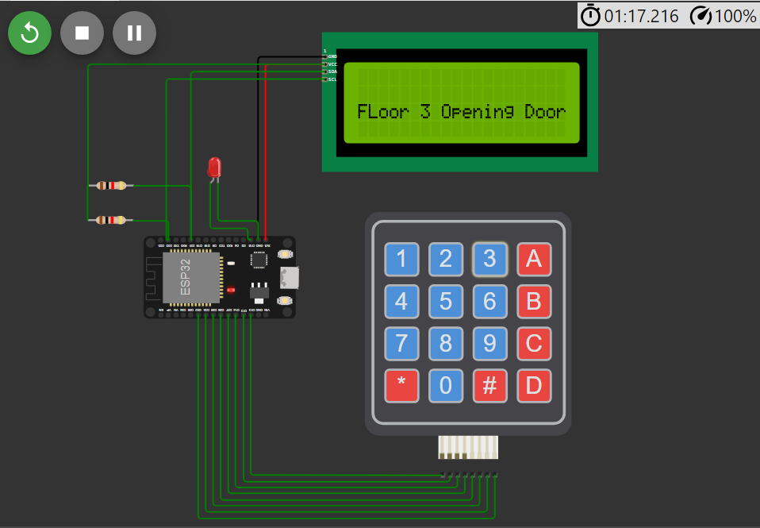
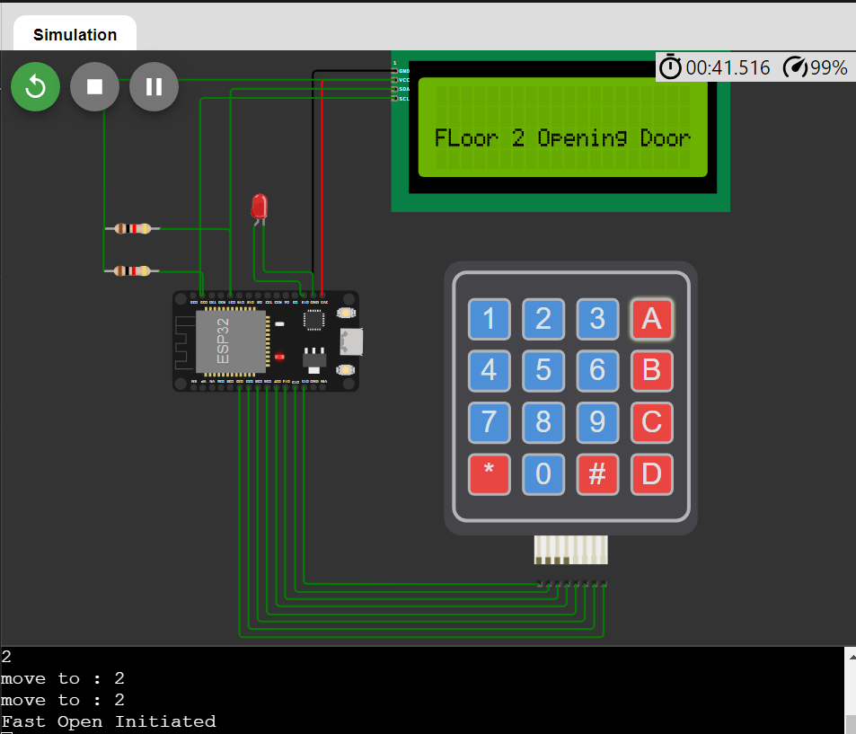
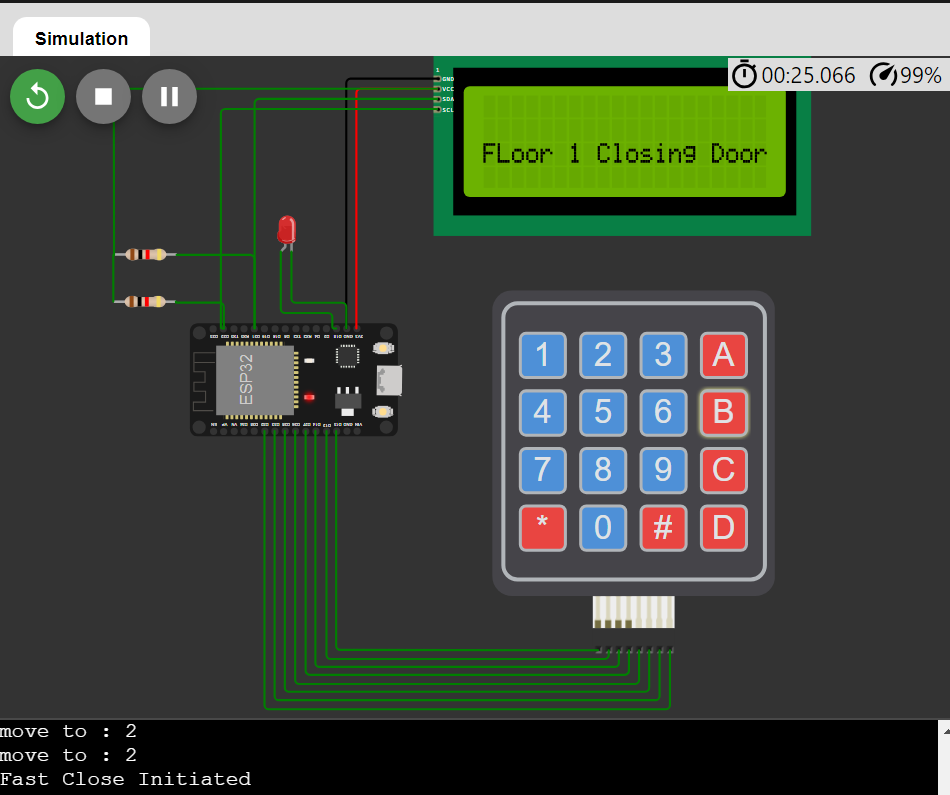

Date of submission: 2024-04-15
Department of Electrical Engineering
Indian Institute of Technology Delhi
ELL 365 Project
Lift controller Group 3
| Name | Entry No | Role | |
|---|---|---|---|
| Chaxu Garg | 2020MT10795 | mt1200795@iitd.ac.in | Software |
| Akanksh Saxena | 2021ME10986 | me1210986@iitd.ac.in | Software |
| Arpit Goyal | 2020MT60870 | mt6200870@iitd.ac.in | Software |
| Aditya Arya | 2021MT60958 | mt6210958@iitd.ac.in | Software |
| Prisha Jain | 2020MT60886 | mt6200886@iitd.ac.in | Software |
| Yash Pravin Shirke | 2020MT60986 | mt6200986@iitd.ac.in | Software |
| Shreyansh Jain | 2021MT10230 | mt1210230@iitd.ac.in | Software |
| Sunpreet Singh | 2020MT10857 | mt1200857@iitd.ac.in | Software |
| Priyanshu Sharma | 2021MT10678 | mt1210678@iitd.ac.in | Software |
| Agniv Nath | 2021EE30727 | ee3210727@iitd.ac.in | Software |
| Aditya Singal | 2021EE31046 | ee3211046@iitd.ac.in | Software |
| Aryan Kumar | 2020MT60871 | mt6200871@iitd.ac.in | Software |
| Harshit Sachdeva | 2021ee30705 | ee3210705@iitd.ac.in | Software |
| Yashwant Singh Kaurav | 2020MT10864 | mt1200864@iitd.ac.in | Software |
| Ayushmaan Pandey | 2021EE30709 | ee3210709@iitd.ac.in | Software |
| Amitesh Gupta | 2021EE30724 | ee3210724@iitd.ac.in | Software |
| Aditya Bhalotia | 2021EE30698 | ee3210698@iitd.ac.in | Software |
| Abhay Yadav | 2021EE10151 | ee1210151@iitd.ac.in | Software |
| Aman Yadav | 2021EE30734 | ee3210734@iitd.ac.in | Software |
| Siddharth | 2022MT62028 | mt6222028@iitd.ac.in | Software |
| Dipshika Deepak Karmalkar | 2021ee30753 | ee3210753@iitd.ac.in | Software |
| Ayush Kumar | 2021EE10150 | ee1210150@iitd.ac.in | Software |
| Neeraj Sharma | 2020MT60885 | mt6200885@iitd.ac.in | Software |
| Palle Sathvika | 2021MT10928 | mt1210928@iitd.ac.in | Software |
| Mridul Jagrat | 2021EE30182 | ee3210182@iitd.ac.in | Software |
| Mamidisetti Amrutha | 2021EE30738 | ee3210738@iitd.ac.in | Software |
| Ayush Sharma | 2021MT10244 | mt1210244@iitd.ac.in | Software |
| Satyam Sagar | 2020EE10551 | ee1200551@iitd.ac.in | Software |
| Volla Jayathi | 2020MT60897 | mt6200897@iitd.ac.in | Software |
| Kothinti Anirudh Krishna Reddy | 2020MT10813 | mt1200813@iitd.ac.in | Software |
| Shourya Vir Jain | 2022EE31798 | ee3221798@iitd.ac.in | Software |
| Arjun Patidar | 2020EE10474 | ee1200474@iitd.ac.in | Software |
| Prateek Chandel | 2020ME10952 | me1200952@iitd.ac.in | Software |
| Roshan Kumar | 2021EE30181 | ee3210181@iitd.ac.in | Software |
| Name | Entry No | Role | |
|---|---|---|---|
| Aman Gupta | 2022TT12151 | tt1222151@iitd.ac.in | Hardware |
| Nandini Singh | 2021EE30747 | ee3210747@iitd.ac.in | Hardware |
| Mihit Puneet Sharma | 2021EE30707 | ee3210707@iitd.ac.in | Hardware |
| Manasi Korade | 2021PH10836 | ph1210836@iitd.ac.in | Hardware |
| Bhukya Jaya Teja Naik | 2020MT60874 | mt6200874@iitd.ac.in | Hardware |
| Bhaira Ram Gat | 2021EE30726 | ee3210726@iitd.ac.in | Hardware |
| Ayush Singh | 2021ee30180 | ee3210180@iitd.ac.in | Hardware |
| Shreyash Bhilwade | 2021EE30178 | ee3210178@iitd.ac.in | Hardware |
| Nandini Choudhary | 2021EE30716 | ee3210716@iitd.ac.in | Hardware |
| Rishika Goel | 2021EE30725 | ee3210725@iitd.ac.in | Hardware |
| Deepanshu Kumar | 2021EE10696 | ee1210696@iitd.ac.in | Hardware |
| Diksha | 2021EE30717 | ee3210717@iitd.ac.in | Hardware |
| Ishan | 2020EE10498 | ee1200498@iitd.ac.in | Hardware |
| Ashesh Mishra | 2022EE11155 | ee1221155@iitd.ac.in | Hardware |
The Lift Controller Project aims to design and implement an efficient
and reliable system for controlling the operation of elevators in a
building. Elevators, or lifts, are essential components of modern
infrastructure, facilitating transportation within multi-story
buildings. The primary objective of this project is to develop a
controller that optimizes elevator movement.
1. Control Algorithm: The heart of the lift controller
system lies in its control algorithm. This algorithm determines the
optimal movement of elevator in response to user requests, considering
factors such as passenger load, destination floors.
2. User Interface: A user-friendly interface allows
passengers to input their desired destination floors and interact with
the elevator system. This interface may include buttons inside the
elevator cabin, as well as external call buttons located on each
floor.
3. Safety Features: Safety is paramount in lift
controller design. The system incorporates safety mechanisms to prevent
accidents, such as emergency stop buttons.
Project Goals:
1. Reliability: The system must operate reliably under
varying loads and conditions, ensuring smooth and uninterrupted vertical
transportation within the building.
2. Scalability: The lift controller should be scalable
to accommodate buildings of different sizes and configurations, from
small residential buildings to large commercial complexes.
3. Safety: Safety is a top priority, and the system
must comply with industry standards and regulations to ensure the
well-being of passengers and personnel.
4. Accessibility: The user interface should be
accessible to passengers of all ages and abilities, with clear signage
and intuitive controls.
By achieving these goals, the Lift Controller Project aims to enhance
the efficiency, reliability, and safety of elevator systems, ultimately
improving the user experience and optimizing vertical transportation in
buildings.
In the simulation
ESP 32 controller
LEDs
Resistors
Switches
Keypad
LCD Screen
In the real circuit
Motor
Motor Driver Circuits
Siren/ Alarm (for emergency call feature)
Initial Conditions:
The lift commences its operation from the 5th
floor.
Timing Parameters:
Time to Move Between Floors: The lift takes 10 seconds to travel between adjacent floors.
Time to Open Doors: Upon reaching a floor, the doors open within 2 seconds.
Time of Stay at a Floor: After the doors open, the lift remains stationary for 5 seconds to allow passengers to enter or exit.
Time to Close Doors: Subsequently, the doors close within 2 seconds to prepare for departure.
Number of Floors:
The building comprises 10 floors, ranging from the
ground floor (0) to the top floor (9).
Our FSM has three states which are mapped to three floors. The mapping is as follows :
| State | Floor |
|---|---|
| q\(_0\) | 1 |
| q\(_1\) | 2 |
| q\(_2\) | 3 |
The mapping from inputs to buttons are as follows :
| Input | Button pressed |
|---|---|
| 00 | Floor 1 |
| 01 | Floor 2 |
| 10 | Floor 3 |
| 11 | Emergency stop |
Note that the following actions are not represented in the FSM :
Fast open / close : Does not involve change of state
Emergency call : Does not involve state change
Any floor button inputs received during transition from one floor to another: The inputs are not ignored and the controller acts on them but since they affect state change some time later and not immediately so they are not shown in the FSM
| Current State | Input | Next State |
|---|---|---|
| q\(_0\) | 00 | q\(_0\) |
| q\(_0\) | 01 | q\(_1\) |
| q\(_0\) | 10 | q\(_2\) |
| q\(_0\) | 11 | q\(_0\) |
| q\(_1\) | 00 | q\(_0\) |
| q\(_1\) | 01 | q\(_1\) |
| q\(_1\) | 10 | q\(_2\) |
| q\(_1\) | 11 | q\(_0\) |
| q\(_2\) | 00 | q\(_0\) |
| q\(_2\) | 01 | q\(_1\) |
| q\(_2\) | 10 | q\(_2\) |
| q\(_2\) | 11 | q\(_0\) |
ESP32 controller
LED light that flashes when the Emergency Call is pressed
Keypad with buttons for entering floor number. This would be installed inside the lift.
LCD screen for display
The user presses button on keypad to go to corresponding floor. For purpose of presentation and analysis it is mapped for 3 floors, but it can be mapped for upto 10 floors.
Fast open / close : User can press the B button to close the lift doors quickly. Similarly he can press the A button to open/reopen the doors.
Emergency call : User can press this button to send a distress signal. In our code it is implemented as a flashing LED. In real life it is usually a siren outside the lift.
Scalability : By changing the parameters defined in lines 15 to 20 of the code , we can change the number of floors, delay between floors, door opening delay, door closing delay and the amount of time we stay on the floor. The simulation assumes we start the lift at floor 5 but this can be changes at line 24.
Micropython language is used and the assumed parameters are specified at the top of the code
The lift opens initially at the specified floor (for eg 5) and waits for next input.
When it receives input to go to a floor (say floor 1) then it moves to that floor and the LCD shows all the floors in between as well (Moving to floor 4 for eg)
Lift reaches the destination and opens and then closes, with the specified delay.
If the a button for another floor is pressed during transit, then one of two occurs:
If the new inout floor lies on the current path , (i.e floor 5 to 1 path) then the lift stops at that floor as well.
Else if it is in the other direction (say floor 6), then the lift stores the new floor in a list and it first goes to floor 1 and then visits floor 6.
Emergency stop : This button immediately interrupts the lift operation and takes the lift to floor 1.
The other three buttons : Emergency Call, Fast open, and Fast close work as described in Section [item:fast_open_close].
https://wokwi.com/projects/395127693038423041
Note : Both the below versions differ only at line 15, attesting to the scalability of the code.
from time import sleep_ms
from machine import Pin, SoftI2C
from i2c_lcd import I2cLcd
import time
from utime import sleep
######## Definitions ########
# Define LCD params
AddressOfLcd = 0x27
i2c = SoftI2C(scl=Pin(22), sda=Pin(21), freq=400000) # connect scl to GPIO 22, sda to GPIO 21
lcd = I2cLcd(i2c, AddressOfLcd, 4, 20)
led = Pin(15, Pin.OUT)
#Assumptions
No_of_floors = 3
floor_floor_delay = 10
floor_opening_delay = 2
floor_closing_delay = 2
floor_stay_delay = 5
floors = []
for i in range(0, No_of_floors,1):
floors.append(str(i))
print(floors)
initial_pos = 5
# Define keypad layout
# O -- Fast Open
# C -- Fast Close
# A -- Alarm
# E -- Emergency Stop
# * && / -- Undefined states
# 0,1,2,3,4,5, 6,7,8,9 -- Floor States
keypad = [
['1', '2', '3', 'O' ],
['4', '5', '6', 'C' ],
['7', '8', '9', '*' ],
['A', '0', 'E', '/' ]
]
# Define the row and column pins
row_pins = [Pin(13, Pin.OUT), Pin(12, Pin.OUT), Pin(14, Pin.OUT), Pin(27, Pin.OUT)]
col_pins = [Pin(26, Pin.IN, Pin.PULL_UP), Pin(25, Pin.IN, Pin.PULL_UP), Pin(33, Pin.IN, Pin.PULL_UP), Pin(32, Pin.IN, Pin.PULL_UP)]
# Initialize the row pins to HIGH
for row_pin in row_pins:
row_pin.value(1)
# Initialize the col pins to LOW
for col_pin in col_pins:
col_pin.value(0)
# Variables to store user input and calculation
user_input = ""
result = None
math_sign = ""
sign_applied = False # When sign button has not been clicked
######## Methods ########
# Pad String
def pad_string(input_string, desired_length = 15):
current_length = len(input_string)
if current_length >= desired_length:
return input_string # No need to pad if it's long enough
# Calculate the number of spaces needed
spaces_needed = desired_length - current_length
# Append the required spaces to the string
padded_string = input_string + " " * spaces_needed
return padded_string
# Print user input
def lcd_print(row, value, start_col = 1, space_padding = True):
print("move to : " + str(row))
lcd.move_to(start_col,row)
if space_padding:
lcd.putstr(pad_string(str(value)))
else:
lcd.putstr(str(value))
# Get Key Pressed value
def get_key():
keys_detected = []
for i, row_pin in enumerate(row_pins):
# Drive the current row LOW
row_pin.value(0)
for j, col_pin in enumerate(col_pins):
if col_pin.value() == 0:
keys_detected.append(keypad[i][j])
# Key is pressed, return the corresponding character
return keypad[i][j]
# Release the row
row_pin.value(1)
return None
disk_size = 200
def SCAN(arr, head, direction):
seek_count = 0
distance , cur_track = 0, 0
left = []
right = []
seek_sequence = []
# if(direction == "left"):
# left.append(0)
# elif(direction == "right"):
# right.append(disk_size-1)
for i in range(len(arr)):
if(arr[i] <= head):
left.append(arr[i])
if(arr[i] > head):
right.append(arr[i])
left.sort()
right.sort()
run = 2
while(run !=0):
if(direction == "left"):
for i in range(len(left)-1, -1 ,-1):
cur_track = left[i]
seek_sequence.append(cur_track)
distance = abs(cur_track - head)
seek_count += distance
head = cur_track
direction = "right"
elif(direction == "right"):
for i in range(len(right)):
cur_track = right[i]
seek_sequence.append(cur_track)
distance = abs(cur_track - head)
seek_count += distance
head = cur_track
direction = "left"
run -= 1
arr.clear()
for i in range(len(seek_sequence)):
arr.append(seek_sequence[i])
if( i != 0 and seek_sequence[i] == seek_sequence[i-1]):
arr.pop()
arr = []
head = initial_pos
direction = "left"
# Run keyboard scan
def keyboard_scan():
global user_input
global result
global math_sign
global sign_applied
key = get_key()
if key is not None:
if key in floors:
arr.append(int(key))
SCAN(arr, head, direction)
for i in range(len(arr)):
print(arr[i])
elif key == "E":
arr.clear()
lcd.clear()
lcd_print(2, "Emergency Stop", 0, False)
elif key == "A":
led.on()
sleep(2)
led.off()
elif key == "O":
print("Fast Open Initiated")
elif key == "C":
print("Fast Close Initiated")
else:
print("Invalid Button Pressed")
# Add a small delay to debounce the keypad
sleep_ms(100)
return key
lcd_print(2, "Floor 5 closing Door", 0, False)
while True:
while(len(arr) != 0):
if(arr[0] - head > 0):
head +=1
lcd.clear()
lcd_print(2, "Moving to floor: " + str((head)), 0, False)
start_time = time.time()
while time.time() - start_time <floor_floor_delay:
key = keyboard_scan()
if(key == "E"):
continue
sleep_ms(100)
elif(arr[0] - head < 0):
head -=1
lcd.clear()
lcd_print(2, "Moving to floor: " + str((head)), 0, False)
start_time = time.time()
while time.time() - start_time <floor_floor_delay:
key = keyboard_scan()
if(key == "E"):
continue
sleep_ms(100)
else:
lcd.clear()
lcd_print(2, "FLoor "+ str((head)) + " Opening Door", 0, False)
start_time = time.time()
key = '-'
while time.time() - start_time <floor_opening_delay:
keyboard_scan()
sleep_ms(100)
start_time = time.time()
lcd.clear()
lcd_print(2, "Floor " + str((head)) + " Reached", 0, False)
while time.time() - start_time <floor_stay_delay:
key = keyboard_scan()
if(key == "C" or key == "O"):
break
sleep_ms(100)
if(key != "O"):
lcd.clear()
lcd_print(2, "FLoor "+ str((head)) + " Closing Door", 0, False)
start_time = time.time()
while time.time() - start_time <floor_closing_delay:
key = keyboard_scan()
if(key == "O"):
break
sleep_ms(100)
if(key != "O"):
arr.pop(0)
keyboard_scan()
sleep_ms(100)
from time import sleep_ms
from machine import Pin, SoftI2C
from i2c_lcd import I2cLcd
import time
from utime import sleep
######## Definitions ########
# Define LCD params
AddressOfLcd = 0x27
i2c = SoftI2C(scl=Pin(22), sda=Pin(21), freq=400000) # connect scl to GPIO 22, sda to GPIO 21
lcd = I2cLcd(i2c, AddressOfLcd, 4, 20)
led = Pin(15, Pin.OUT)
#Assumptions
No_of_floors = 10
floor_floor_delay = 10
floor_opening_delay = 2
floor_closing_delay = 2
floor_stay_delay = 5
floors = []
for i in range(0, No_of_floors,1):
floors.append(str(i))
print(floors)
initial_pos = 5
# Define keypad layout
# O -- Fast Open
# C -- Fast Close
# A -- Alarm
# E -- Emergency Stop
# * && / -- Undefined states
# 0,1,2,3,4,5, 6,7,8,9 -- Floor States
keypad = [
['1', '2', '3', 'O' ],
['4', '5', '6', 'C' ],
['7', '8', '9', '*' ],
['A', '0', 'E', '/' ]
]
# Define the row and column pins
row_pins = [Pin(13, Pin.OUT), Pin(12, Pin.OUT), Pin(14, Pin.OUT), Pin(27, Pin.OUT)]
col_pins = [Pin(26, Pin.IN, Pin.PULL_UP), Pin(25, Pin.IN, Pin.PULL_UP), Pin(33, Pin.IN, Pin.PULL_UP), Pin(32, Pin.IN, Pin.PULL_UP)]
# Initialize the row pins to HIGH
for row_pin in row_pins:
row_pin.value(1)
# Initialize the col pins to LOW
for col_pin in col_pins:
col_pin.value(0)
# Variables to store user input and calculation
user_input = ""
result = None
math_sign = ""
sign_applied = False # When sign button has not been clicked
######## Methods ########
# Pad String
def pad_string(input_string, desired_length = 15):
current_length = len(input_string)
if current_length >= desired_length:
return input_string # No need to pad if it's long enough
# Calculate the number of spaces needed
spaces_needed = desired_length - current_length
# Append the required spaces to the string
padded_string = input_string + " " * spaces_needed
return padded_string
# Print user input
def lcd_print(row, value, start_col = 1, space_padding = True):
print("move to : " + str(row))
lcd.move_to(start_col,row)
if space_padding:
lcd.putstr(pad_string(str(value)))
else:
lcd.putstr(str(value))
# Get Key Pressed value
def get_key():
keys_detected = []
for i, row_pin in enumerate(row_pins):
# Drive the current row LOW
row_pin.value(0)
for j, col_pin in enumerate(col_pins):
if col_pin.value() == 0:
keys_detected.append(keypad[i][j])
# Key is pressed, return the corresponding character
return keypad[i][j]
# Release the row
row_pin.value(1)
return None
disk_size = 200
def SCAN(arr, head, direction):
seek_count = 0
distance , cur_track = 0, 0
left = []
right = []
seek_sequence = []
# if(direction == "left"):
# left.append(0)
# elif(direction == "right"):
# right.append(disk_size-1)
for i in range(len(arr)):
if(arr[i] <= head):
left.append(arr[i])
if(arr[i] > head):
right.append(arr[i])
left.sort()
right.sort()
run = 2
while(run !=0):
if(direction == "left"):
for i in range(len(left)-1, -1 ,-1):
cur_track = left[i]
seek_sequence.append(cur_track)
distance = abs(cur_track - head)
seek_count += distance
head = cur_track
direction = "right"
elif(direction == "right"):
for i in range(len(right)):
cur_track = right[i]
seek_sequence.append(cur_track)
distance = abs(cur_track - head)
seek_count += distance
head = cur_track
direction = "left"
run -= 1
arr.clear()
for i in range(len(seek_sequence)):
arr.append(seek_sequence[i])
if( i != 0 and seek_sequence[i] == seek_sequence[i-1]):
arr.pop()
arr = []
head = initial_pos
direction = "left"
# Run keyboard scan
def keyboard_scan():
global user_input
global result
global math_sign
global sign_applied
key = get_key()
if key is not None:
if key in floors:
arr.append(int(key))
SCAN(arr, head, direction)
for i in range(len(arr)):
print(arr[i])
elif key == "E":
arr.clear()
lcd.clear()
lcd_print(2, "Emergency Stop", 0, False)
elif key == "A":
led.on()
sleep(2)
led.off()
elif key == "O":
print("Fast Open Initiated")
elif key == "C":
print("Fast Close Initiated")
else:
print("Invalid Button Pressed")
# Add a small delay to debounce the keypad
sleep_ms(100)
return key
lcd_print(2, "Floor 5 closing Door", 0, False)
while True:
while(len(arr) != 0):
if(arr[0] - head > 0):
head +=1
lcd.clear()
lcd_print(2, "Moving to floor: " + str((head)), 0, False)
start_time = time.time()
while time.time() - start_time <floor_floor_delay:
key = keyboard_scan()
if(key == "E"):
continue
sleep_ms(100)
elif(arr[0] - head < 0):
head -=1
lcd.clear()
lcd_print(2, "Moving to floor: " + str((head)), 0, False)
start_time = time.time()
while time.time() - start_time <floor_floor_delay:
key = keyboard_scan()
if(key == "E"):
continue
sleep_ms(100)
else:
lcd.clear()
lcd_print(2, "FLoor "+ str((head)) + " Opening Door", 0, False)
start_time = time.time()
key = '-'
while time.time() - start_time <floor_opening_delay:
keyboard_scan()
sleep_ms(100)
start_time = time.time()
lcd.clear()
lcd_print(2, "Floor " + str((head)) + " Reached", 0, False)
while time.time() - start_time <floor_stay_delay:
key = keyboard_scan()
if(key == "C" or key == "O"):
break
sleep_ms(100)
if(key != "O"):
lcd.clear()
lcd_print(2, "FLoor "+ str((head)) + " Closing Door", 0, False)
start_time = time.time()
while time.time() - start_time <floor_closing_delay:
key = keyboard_scan()
if(key == "O"):
break
sleep_ms(100)
if(key != "O"):
arr.pop(0)
keyboard_scan()
sleep_ms(100)

 
Deselect Option The lift could have a deselect
option such that if a person selects the wrong button, he has the option
to deselect it and select the correct one.
In a case if the lift has started moving, and then the button is
deselected, the lift will move in the same direction, stop on the
nearest floor and then continue moving according to the remaining
selected buttons.
Outer lift control panel The lift setup may include an external control panel for calling the lift.
Non-Stop setting The lift control panel may have a non-stop setting for a case in which the lift is needed to operate from the ground floor directly to the third and subsequent floor (i.e. it doesn’t stop in between the ground floor to the third floor)
The Lift Controller Project is all about creating a system that makes elevators in buildings work smoothly and safely. We’ve put together different parts like the controller, keypad, lights, and screen to make it easy for people to use and to alert for emergencies.
The system follows a plan for how long things take, like moving between floors or opening and closing doors. This helps everything run smoothly and keeps people moving comfortably. Also, we’ve added features like quick door buttons and an emergency call button to make it even better.
To summarize, while our current lift controller meets basic requirements, further enhancements are necessary to optimize functionality, efficiency, and safety. These improvements will create a more sophisticated and reliable lift system that meets modern user expectations.
Word Count: 4430
Number of Sentences: 380
Number of Characters: 24963
Readability Index1: 1.4
This means that this text can be understood by children who can read
books with chapters.
Gunning-Fog Index2: 7.4
This means that the text can be easily understood by someone who has
passed grade 8, US education standards.
Flesch Reading Ease3: 87
This means that this text can be understood by 12-13 year olds.
Coleman Liau Index4: 5.6
This means that the text can be easily understood by someone who has
passed grade 10, US education standards.
The readability index indicates the approximate reading grade level of a text based on the US education system. The formula takes into account characters in a given word and the words in a given sentence. It varies from 0 - 16+.↩︎
On a scale from 0 -20, the Gunning-Fog Index is a weighted average of the number of words per sentence and the number of long words per word. This can be understood as the text can be understood by someone who left full-time education at a later age than the index. Hence a lower Gunning-Fog index is easier to read.↩︎
The Flesch Reading Ease indicates the approximate reading grade level of a text. The formula takes into account sentence length and word length. It is based on a 0-100 scale. A high score means that the text is easier to read.↩︎
On a scale of 0 - 17+, the Coleman Liau Index relies on characters and calculates the index based on the number of characters in a word and the number of words in a sentence. The score of the text indicates the US school level a person needs to understand the text.↩︎